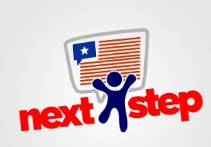

A / 01 INGLÉS

TU CAMINO HACIA LA FLUIDEZ
Next Step
Da el siguiente paso en tu aprendizaje del inglés. Fortalece tus bases y desarrolla las habilidades de habla, escucha, lectura y escritura con una experiencia orientada a tu ritmo y tus objetivos.
- ↗ Fundamentos sólidos y progreso continuo
- ↗ Desarrollo de habilidades integrales
- ↗ Aprendizaje enfocado en tus metas
NS